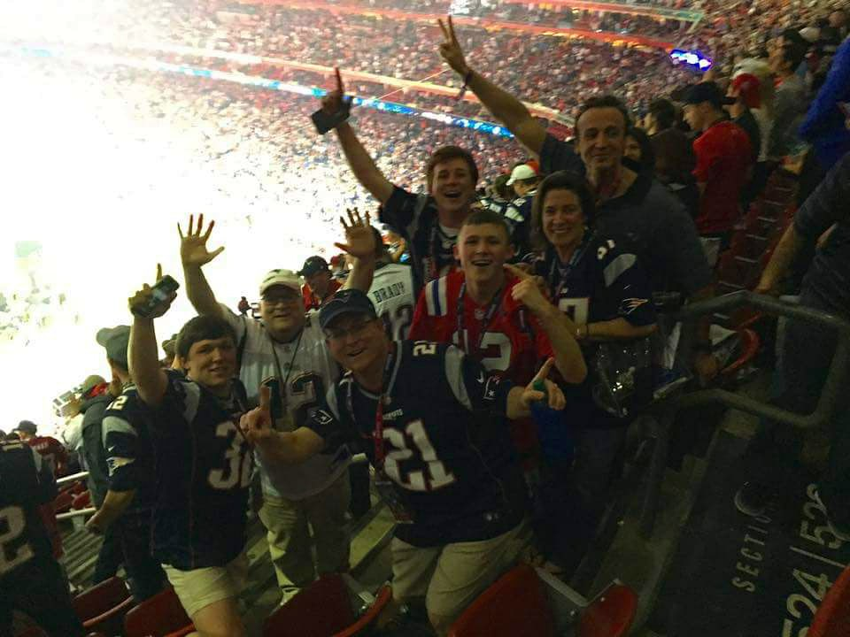

I went to Superbowl 51 in Houston and saw the Patriots beat the Falcons!
I live in Cumberland Hall at Umaine... and I live in the town of Cumberland in Maine!
I have two pigs and five goats at home.
I met Dion Lewis at a Celtics game once and got a picture! I am just about his height!
My favorite color is orange.
My favorite food is Lobster.
I have a very unique favorite ice cream... Grapenut!
I have 25 pairs of shoes
My dad owns a resturaunt